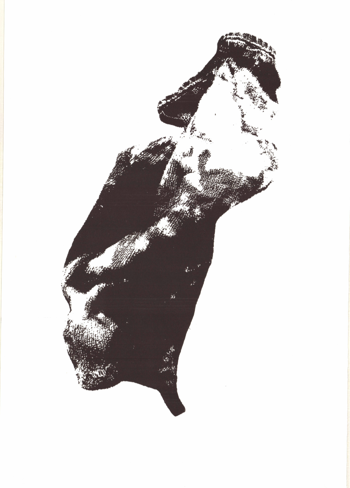
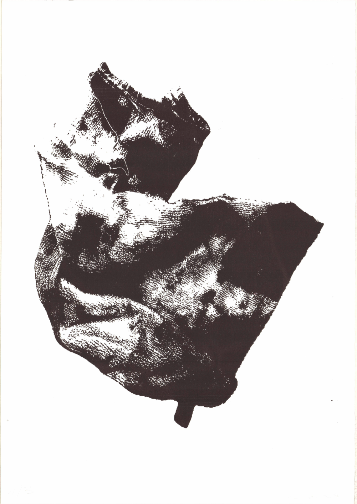
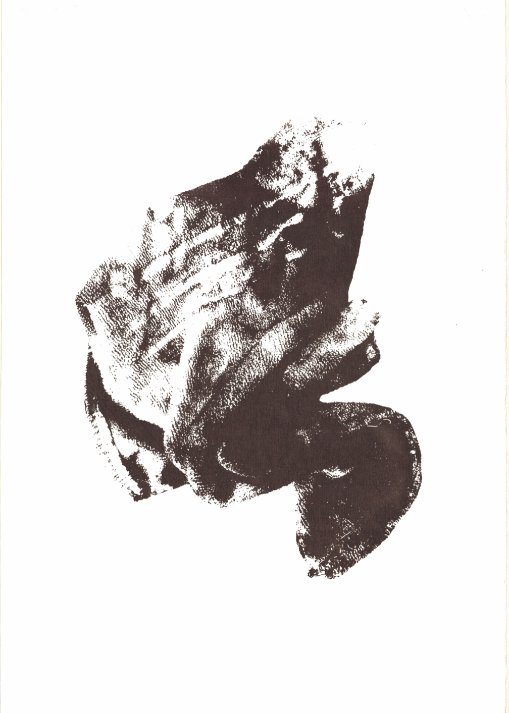
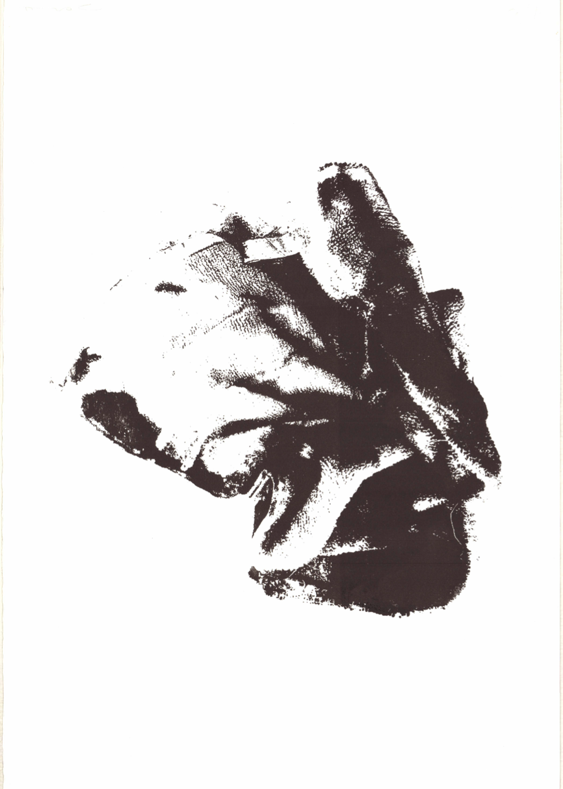
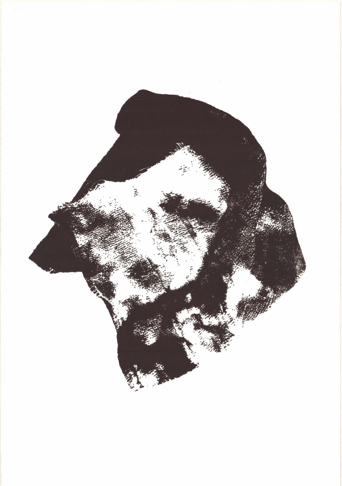
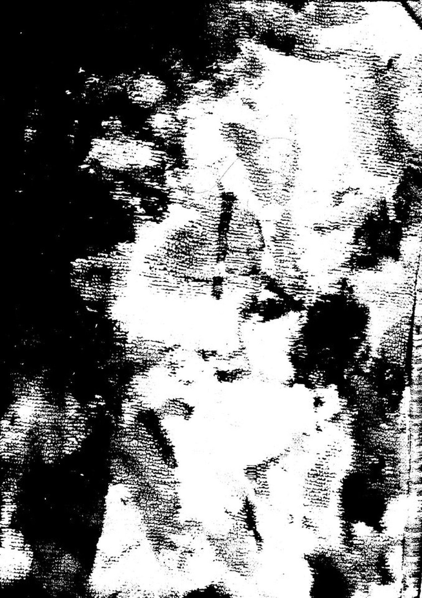
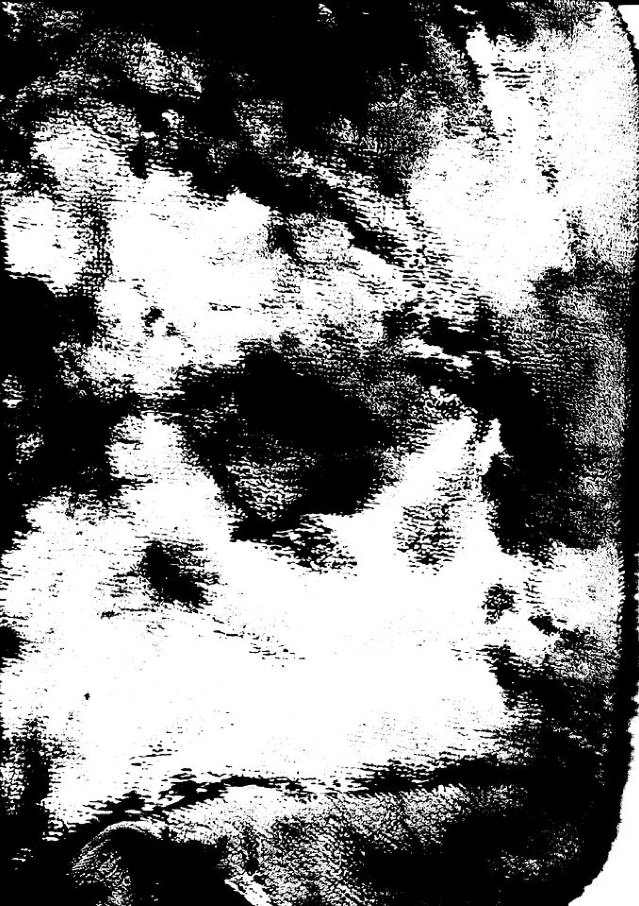

Trapos sucios
Trapos sucios es un proyecto compuesto por cinco serigrafías y un díptico realizados a partir de escaneos de mis propios trapos.
Reducidas al blanco y negro, las imágenes hacen visibles las manchas, los pliegues y las marcas de desgaste acumuladas sobre la superficie de la tela. El proceso transforma estas huellas en registros gráficos, llevando al primer plano aquello que normalmente permanece en el taller. Las partes más oscuras de un trapo.





Serie de 5 serigrafías sobre papel, formato A3+, edición de 3 ejemplares, 2023.


Díptico de serigrafías sobre papel, formato A3+, edición de 1 ejemplar, 2023, vendido.